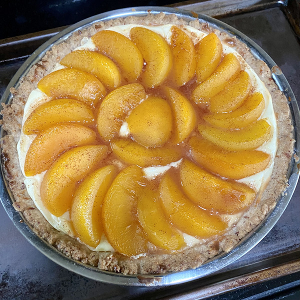

Bavarian Torte

Description
A pecan crust with creamcheese filling, topped with cinnamon sliced peaches.
My mother's recipe for Bavarian Torte. She won several awards for this recipe at local baking contests in my home town.
Ingredients
Crust:
- ½ cup softened margarine or butter
- ⅓ cup sugar
- ¼ tsp vanilla extract
- ¾ cup all-purpose flour
- ⅔ cup finally chopped pecans or walnuts
Filling:
- 1 8-oz pack cream cheese
- 1 egg
- ½ tsp vanilla
- ¼ cup sugar
Topping:
- 1 29-oz can pear or cling peach slices, well drained
- ¼ cup sugar (or more)
- ½ tsp (or more) cinnamon
Steps
- Preheat oven to 450 F.
- Beat margarine (butter), sugar and vanilla until well blended. Gradually add flour until well mixed. Add nuts. With floured hands press mixture into 9-inch cake pan, bottom and up the sides.
- Beat cream cheese, vanilla and sugar until smooth. Beat in egg until well blended. Pour mixture into lined cake pan.
- Combine sugar and cinnamon. Add fruit slices and coat well. Arrange fruit on top of cream cheese mixture.
- Bake 10 minutes. Reduce temperature to 400 F and bake for 26 minutes more. I always put the cake pan on a baking sheet in the oven to prevent spills in case the pan is very full.
- Cool.
Return to homepage